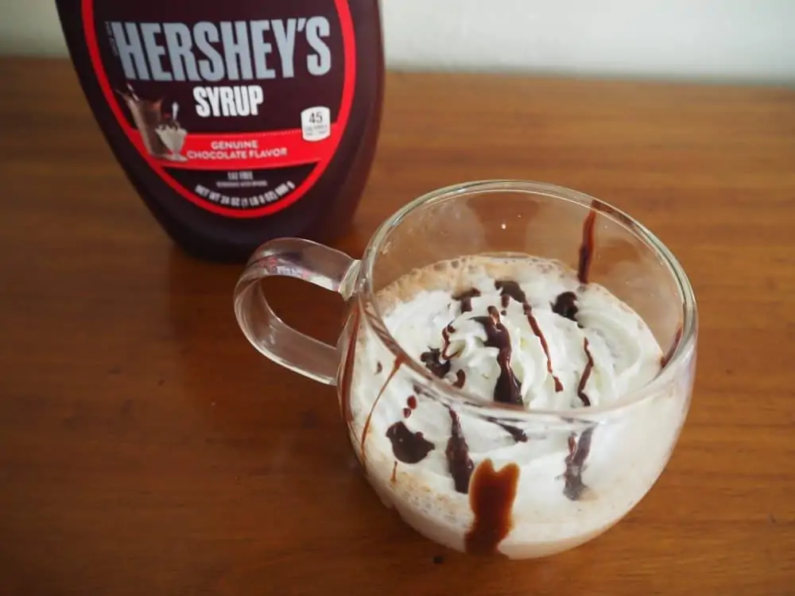

Life begin with a coffee!
Types of Coffee around the world
1. Cold Brew
Low acidity and sweet, cold brew coffee is made by adding coarsely ground beans to cold water and
letting the
mixture brew for several hours. You can also make a cold brew mocha!

2. Single or Double Espresso
The basis of all espresso drinks is a shot of espresso, made by pushing pressurized hot water through
finely-ground, tightly-tamped coffee. You can pull short and long (single and double) shots, which are one
and two ounces respectively.

3. Mocha
A mocha is a latte that has been sweetened with chocolate syrup or cocoa powder. You can also try adding other caramel or peppermint syrups.

4. Black Eye
A black eye is an even stronger option. To make one, brew a cup of hot black coffee and add a double shot of espresso.
5. Irish Coffee
A classic, cozy dessert drink made by mixing hot black coffee with Irish whiskey and Baileys Irish Cream. For a more decadent drink, top with whipped cream and add flavored syrups.

6. Macchiato
Macchiato in Italian means ‘stained.’ This is because a serving of Macchiato is a normal Espresso shot with a little-foamed milk on the top.